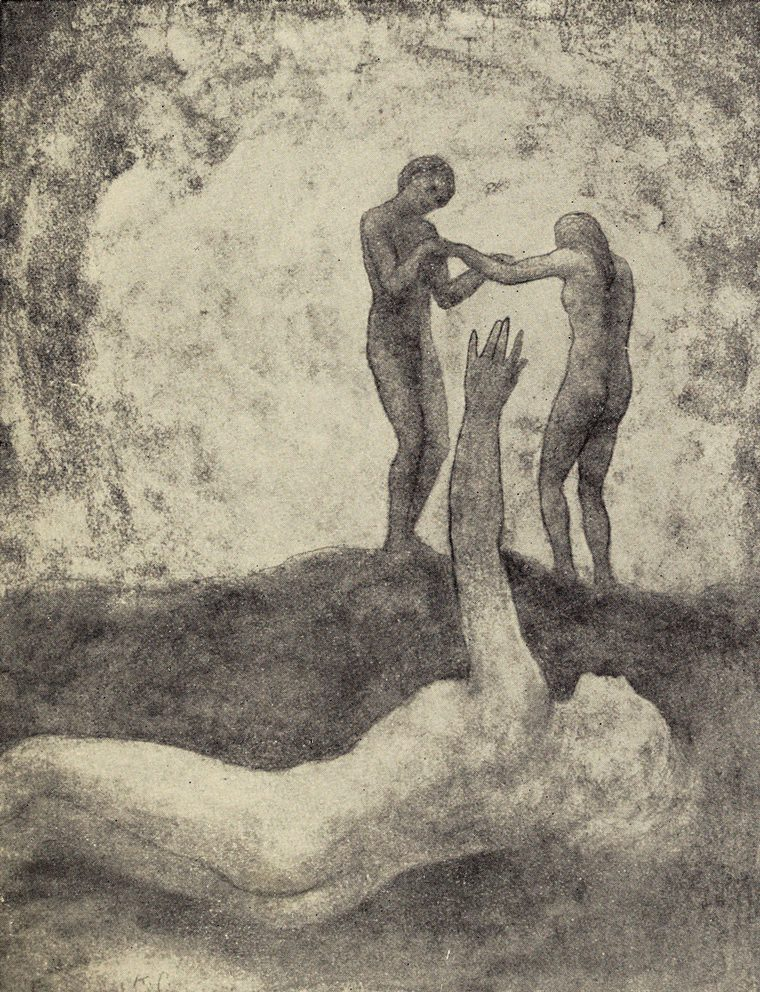

3Il matrimonio
Allora Almitra parlò di nuovo e disse: E che cosa ci dici del Matrimonio, maestro?
Ed egli rispose dicendo:
Siete nati insieme, e insieme sarete per sempre.
Sarete insieme quando le bianche ali della morte disperderanno i vostri giorni.
Sì, sarete insieme perfino nella silenziosa memoria di Dio.
Ma ci siano spazi nel vostro stare insieme,
E i venti dei cieli danzino tra voi.
Amatevi l'un l'altro, ma non fate dell'amore una catena:
Sia piuttosto un mare in movimento tra le rive delle vostre anime.
Riempitevi a vicenda la coppa, ma non bevete da una sola coppa.
Datevi l'un l'altro del vostro pane, ma non mangiate dalla stessa pagnotta. Cantate e danzate insieme e siate gioiosi, ma ognuno di voi sia solo,
Come sono sole le corde di un liuto, anche se vibrano della stessa musica.
Date i vostri cuori, ma non in custodia l'uno all'altro.
Perché soltanto la mano della Vita può contenere i vostri cuori.
E state insieme, ma non troppo vicini:
Perché le colonne del tempio stanno separate,
E la quercia e il cipresso non crescono l'una all'ombra dell'altro.
